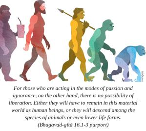
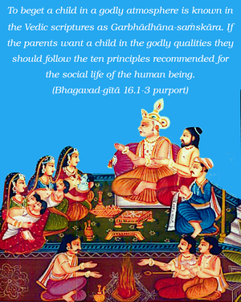
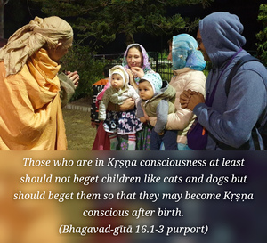
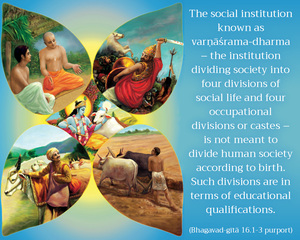

The Supreme Personality of Godhead said: Fearlessness; purification of one’s existence; cultivation of spiritual knowledge; charity; self-control; performance of sacrifice; study of the Vedas; austerity; simplicity; nonviolence; truthfulness; freedom from anger; renunciation; tranquillity; aversion to faultfinding; compassion for all living entities; freedom from covetousness; gentleness; modesty; steady determination; vigor; forgiveness; fortitude; cleanliness; and freedom from envy and from the passion for honor – these transcendental qualities, O son of Bharata, belong to godly men endowed with divine nature.




In the beginning of the Fifteenth Chapter, the banyan tree of this material world was explained. The extra roots coming out of it were compared to the activities of the living entities, some auspicious, some inauspicious. In the Ninth Chapter, also, the devas, or godly, and the asuras, the ungodly, or demons, were explained. Now, according to Vedic rites, activities in the mode of goodness are considered auspicious for progress on the path of liberation, and such activities are known as daivī prakṛti, transcendental by nature. Those who are situated in the transcendental nature make progress on the path of liberation. For those who are acting in the modes of passion and ignorance, on the other hand, there is no possibility of liberation. Either they will have to remain in this material world as human beings, or they will descend among the species of animals or even lower life forms. In this Sixteenth Chapter the Lord explains both the transcendental nature and its attendant qualities and the demoniac nature and its qualities. He also explains the advantages and disadvantages of these qualities.
The word abhijātasya in reference to one born of transcendental qualities or godly tendencies is very significant. To beget a child in a godly atmosphere is known in the Vedic scriptures as Garbhādhāna-saṁskāra. If the parents want a child in the godly qualities they should follow the ten principles recommended for the social life of the human being. In Bhagavad-gītā we have studied also before that sex life for begetting a good child is Kṛṣṇa Himself. Sex life is not condemned, provided the process is used in Kṛṣṇa consciousness. Those who are in Kṛṣṇa consciousness at least should not beget children like cats and dogs but should beget them so that they may become Kṛṣṇa conscious after birth. That should be the advantage of children born of a father and mother absorbed in Kṛṣṇa consciousness.
The social institution known as varṇāśrama-dharma – the institution dividing society into four divisions of social life and four occupational divisions or castes – is not meant to divide human society according to birth. Such divisions are in terms of educational qualifications. They are to keep the society in a state of peace and prosperity. The qualities mentioned herein are explained as transcendental qualities meant for making a person progress in spiritual understanding so that he can get liberated from the material world.
In the varṇāśrama institution the sannyāsī, or the person in the renounced order of life, is considered to be the head or the spiritual master of all the social statuses and orders. A brāhmaṇa is considered to be the spiritual master of the three other sections of a society, namely, the kṣatriyas, the vaiśyas and the śūdras, but a sannyāsī, who is on the top of the institution, is considered to be the spiritual master of the brāhmaṇas also. For a sannyāsī, the first qualification should be fearlessness. Because a sannyāsī has to be alone without any support or guarantee of support, he has simply to depend on the mercy of the Supreme Personality of Godhead. If one thinks, “After I leave my connections, who will protect me?” he should not accept the renounced order of life. One must be fully convinced that Kṛṣṇa or the Supreme Personality of Godhead in His localized aspect as Paramātmā is always within, that He is seeing everything, and He always knows what one intends to do. One must thus have firm conviction that Kṛṣṇa as Paramātmā will take care of a soul surrendered to Him. “I shall never be alone,” one should think. “Even if I live in the darkest regions of a forest I shall be accompanied by Kṛṣṇa, and He will give me all protection.” That conviction is called abhayam, fearlessness. This state of mind is necessary for a person in the renounced order of life.
Then he has to purify his existence. There are so many rules and regulations to be followed in the renounced order of life. Most important of all, a sannyāsī is strictly forbidden to have any intimate relationship with a woman. He is even forbidden to talk with a woman in a secluded place. Lord Caitanya was an ideal sannyāsī, and when He was at Purī His feminine devotees could not even come near to offer their respects. They were advised to bow down from a distant place. This is not a sign of hatred for women as a class, but it is a stricture imposed on the sannyāsī not to have close connections with women. One has to follow the rules and regulations of a particular status of life in order to purify his existence. For a sannyāsī, intimate relations with women and possession of wealth for sense gratification are strictly forbidden. The ideal sannyāsī was Lord Caitanya Himself, and we can learn from His life that He was very strict in regards to women. Although He is considered to be the most liberal incarnation of Godhead, accepting the most fallen conditioned souls, He strictly followed the rules and regulations of the sannyāsa order of life in connection with association with women. One of His personal associates, namely Choṭa Haridāsa, was associated with Lord Caitanya along with His other confidential personal associates, but somehow or other this Choṭa Haridāsa looked lustily on a young woman, and Lord Caitanya was so strict that He at once rejected him from the society of His personal associates. Lord Caitanya said, “For a sannyāsī or anyone who is aspiring to get out of the clutches of material nature and trying to elevate himself to the spiritual nature and go back home, back to Godhead, for him, looking toward material possessions and women for sense gratification – not even enjoying them, but just looking toward them with such a propensity – is so condemned that he had better commit suicide before experiencing such illicit desires.” So these are the processes for purification.
The next item is jñāna-yoga-vyavasthiti: being engaged in the cultivation of knowledge. Sannyāsī life is meant for distributing knowledge to the householders and others who have forgotten their real life of spiritual advancement. A sannyāsī is supposed to beg from door to door for his livelihood, but this does not mean that he is a beggar. Humility is also one of the qualifications of a transcendentally situated person, and out of sheer humility the sannyāsī goes from door to door, not exactly for the purpose of begging, but to see the householders and awaken them to Kṛṣṇa consciousness. This is the duty of a sannyāsī. If he is actually advanced and so ordered by his spiritual master, he should preach Kṛṣṇa consciousness with logic and understanding, and if one is not so advanced he should not accept the renounced order of life. But even if one has accepted the renounced order of life without sufficient knowledge, he should engage himself fully in hearing from a bona fide spiritual master to cultivate knowledge. A sannyāsī, or one in the renounced order of life, must be situated in fearlessness, sattva-saṁśuddhi (purity) and jñāna-yoga (knowledge).
The next item is charity. Charity is meant for the householders. The householders should earn a livelihood by an honorable means and spend fifty percent of their income to propagate Kṛṣṇa consciousness all over the world. Thus a householder should give in charity to institutional societies that are engaged in that way. Charity should be given to the right receiver. There are different kinds of charity, as will be explained later on – charity in the modes of goodness, passion and ignorance. Charity in the mode of goodness is recommended by the scriptures, but charity in the modes of passion and ignorance is not recommended, because it is simply a waste of money. Charity should be given only to propagate Kṛṣṇa consciousness all over the world. That is charity in the mode of goodness.
Then as far as dama (self-control) is concerned, it is not only meant for other orders of religious society, but is especially meant for the householder. Although he has a wife, a householder should not use his senses for sex life unnecessarily. There are restrictions for the householders even in sex life, which should only be engaged in for the propagation of children. If he does not require children, he should not enjoy sex life with his wife. Modern society enjoys sex life with contraceptive methods or more abominable methods to avoid the responsibility of children. This is not in the transcendental quality, but is demoniac. If anyone, even if he is a householder, wants to make progress in spiritual life, he must control his sex life and should not beget a child without the purpose of serving Kṛṣṇa. If he is able to beget children who will be in Kṛṣṇa consciousness, one can produce hundreds of children, but without this capacity one should not indulge only for sense pleasure.
Sacrifice is another item to be performed by the householders, because sacrifices require a large amount of money. Those in other orders of life, namely brahmacarya, vānaprastha and sannyāsa, have no money; they live by begging. So performance of different types of sacrifice is meant for the householders. They should perform agni-hotra sacrifices as enjoined in the Vedic literature, but such sacrifices at the present moment are very expensive, and it is not possible for any householder to perform them. The best sacrifice recommended in this age is called saṅkīrtana-yajña. This saṅkīrtana-yajña, the chanting of Hare Kṛṣṇa, Hare Kṛṣṇa, Kṛṣṇa Kṛṣṇa, Hare Hare/ Hare Rāma, Hare Rāma, Rāma Rāma, Hare Hare, is the best and most inexpensive sacrifice; everyone can adopt it and derive benefit. So these three items, namely charity, sense control and performance of sacrifice, are meant for the householder.
Then svādhyāya, Vedic study, is meant for brahmacarya, or student life. Brahmacārīs should have no connection with women; they should live a life of celibacy and engage the mind in the study of Vedic literature for cultivation of spiritual knowledge. This is called svādhyāya.
Tapas, or austerity, is especially meant for the retired life. One should not remain a householder throughout his whole life; he must always remember that there are four divisions of life – brahmacarya, gṛhastha, vānaprastha and sannyāsa. So after gṛhastha, householder life, one should retire. If one lives for a hundred years, he should spend twenty-five years in student life, twenty-five in householder life, twenty-five in retired life and twenty-five in the renounced order of life. These are the regulations of the Vedic religious discipline. A man retired from household life must practice austerities of the body, mind and tongue. That is tapasya. The entire varṇāśrama-dharma society is meant for tapasya. Without tapasya, or austerity, no human being can get liberation. The theory that there is no need of austerity in life, that one can go on speculating and everything will be nice, is recommended neither in the Vedic literature nor in Bhagavad-gītā. Such theories are manufactured by show-bottle spiritualists who are trying to gather more followers. If there are restrictions, rules and regulations, people will not become attracted. Therefore those who want followers in the name of religion, just to have a show only, don’t restrict the lives of their students, nor their own lives. But that method is not approved by the Vedas.
As far as the brahminical quality of simplicity is concerned, not only should a particular order of life follow this principle, but every member, be he in the brahmacārī āśrama, gṛhastha āśrama, vānaprastha āśrama or sannyāsa āśrama. One should be very simple and straightforward.
Ahiṁsā means not arresting the progressive life of any living entity. One should not think that since the spirit spark is never killed even after the killing of the body there is no harm in killing animals for sense gratification. People are now addicted to eating animals, in spite of having an ample supply of grains, fruits and milk. There is no necessity for animal killing. This injunction is for everyone. When there is no alternative, one may kill an animal, but it should be offered in sacrifice. At any rate, when there is an ample food supply for humanity, persons who are desiring to make advancement in spiritual realization should not commit violence to animals. Real ahiṁsā means not checking anyone’s progressive life. The animals are also making progress in their evolutionary life by transmigrating from one category of animal life to another. If a particular animal is killed, then his progress is checked. If an animal is staying in a particular body for so many days or so many years and is untimely killed, then he has to come back again in that form of life to complete the remaining days in order to be promoted to another species of life. So their progress should not be checked simply to satisfy one’s palate. This is called ahiṁsā.
Satyam. This word means that one should not distort the truth for some personal interest. In Vedic literature there are some difficult passages, but the meaning or the purpose should be learned from a bona fide spiritual master. That is the process for understanding the Vedas. Śruti means that one should hear from the authority. One should not construe some interpretation for his personal interest. There are so many commentaries on Bhagavad-gītā that misinterpret the original text. The real import of the word should be presented, and that should be learned from a bona fide spiritual master.
Akrodha means to check anger. Even if there is provocation one should be tolerant, for once one becomes angry his whole body becomes polluted. Anger is a product of the mode of passion and lust, so one who is transcendentally situated should check himself from anger. Apaiśunam means that one should not find fault with others or correct them unnecessarily. Of course to call a thief a thief is not faultfinding, but to call an honest person a thief is very much offensive for one who is making advancement in spiritual life. Hrī means that one should be very modest and must not perform some act which is abominable. Acāpalam, determination, means that one should not be agitated or frustrated in some attempt. There may be failure in some attempt, but one should not be sorry for that; he should make progress with patience and determination.
The word tejas used here is meant for the kṣatriyas. The kṣatriyas should always be very strong to be able to give protection to the weak. They should not pose themselves as nonviolent. If violence is required, they must exhibit it. But a person who is able to curb down his enemy may under certain conditions show forgiveness. He may excuse minor offenses.
Śaucam means cleanliness, not only in mind and body but in one’s dealings also. It is especially meant for the mercantile people, who should not deal in the black market. Nāti-mānitā, not expecting honor, applies to the śūdras, the worker class, which are considered, according to Vedic injunctions, to be the lowest of the four classes. They should not be puffed up with unnecessary prestige or honor and should remain in their own status. It is the duty of the śūdras to offer respect to the higher class for the upkeep of the social order.
All these twenty-six qualifications mentioned are transcendental qualities. They should be cultivated according to the different statuses of social and occupational order. The purport is that even though material conditions are miserable, if these qualities are developed by practice, by all classes of men, then gradually it is possible to rise to the highest platform of transcendental realization.